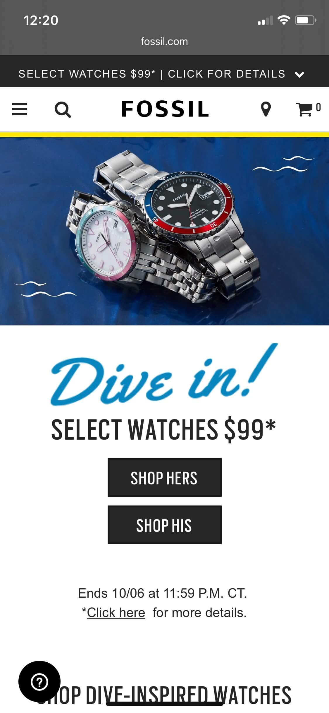

Visual Hierarchy
Fossil
Fossil.com This website portrays visual hierarchy well because of how they use font size to grab attention. This helps the company direct the user to buy product.
Rule of Thirds
Pure Michigan
Pure Michigan.comI felt this website used the rule of thirds well on how it is proportioned and the picture that is used in the background to put emphasis on the city of detroit
White Space and Clean Design
Tenkara Rod Co.
Tenkara Rod Co.comI feel that this website is very clean and simple. It uses its space afectivly and still has white space which gives it a very free feeling. I like that it doesn't look crowded like and amazon page